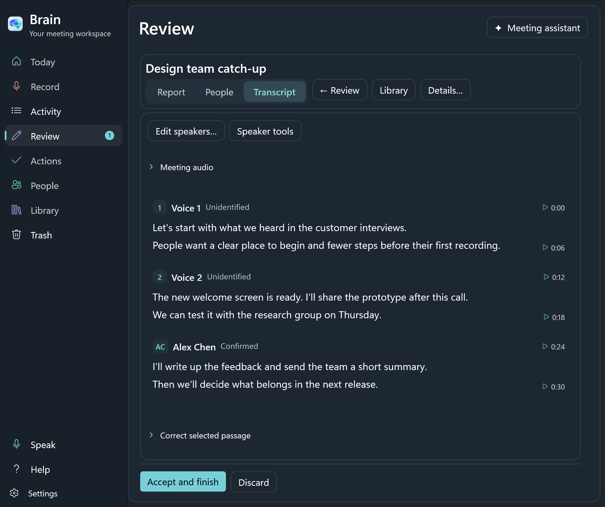
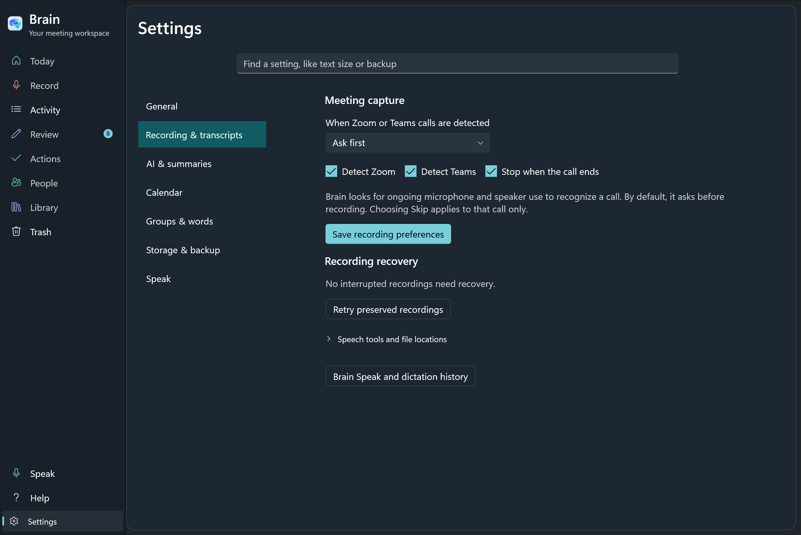

The real interface.
Sample content.
The Windows screens on this prototype were rendered by Brain’s native WinUI interface. They are not HTML mockups or AI-generated images.
Captured from Brain for Windows
The new captures use unmodified production interface code from the local Windows development source, captured on September 10, 2026 (Edmonton time). A separate test desktop and fresh sample profile keep personal meetings and settings out of the images.
The website uses complete captures and crops of those same pixels. We have not redrawn controls, changed labels, recolored the app, or inserted invented elements into a screenshot. Website motion changes how a capture is presented; it does not show a running app session.
The saved-transcript and People captures show the revised speaker interface. The other captures retain their earlier development versions. These are development-build captures, not a certification of the currently downloadable preview. The Windows preview notes describe current release limitations.
What the sample content means
The meeting names, transcript passages, assistant response, voice-review samples, and Speak history are seeded demonstration content. The recording duration, audio-health message, and Listening indicator are sample states of real controls. They are not evidence that a live call, speech model, microphone, or text-insertion workflow was run successfully.
The saved meeting summary and assistant images in the next-step section come from the earlier ordinary Windows app journey. They show generated sample audio and an actual local-model answer. Their original titles and controls are retained.
Mac and Windows have different interfaces. The homepage’s native Windows showcase stays explicitly labelled Windows when you select the Mac download. See the Mac setup guide for that platform.
Inspect the captures
{kind=link}


{kind=link}
